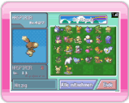
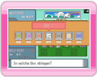
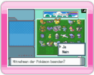
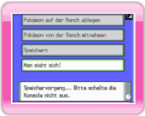

15 |
Pokémon mitnehmen |
 |
Bevor du Pokémon von der Ranch mitnimmst, lies bitte den Abschnitt „13. Verbindung mit einem Nintendo DS-System“.

Nintendo
DS-Bildschirm Wähle im Hauptmenü des Nintendo DS-Systems POKéMON VON DER RANCH MITNEHMEN. Der rechts abgebildete Bildschirm erscheint. 
Nintendo
DS-Bildschirm Wähle das Pokémon aus, das du von der Ranch auf dein Nintendo DS-System übertragen möchtest und drücke Hinweis: Eukalias Pokémon können nicht von der Ranch mitgenommen werden. 
Nintendo
DS-Bildschirm Wenn du fertig bist, wähle ENDE und bestätige die folgende Frage MITNEHMEN DER POKéMON BEENDEN? mit JA, um ins Hauptmenü zurückzugelangen.

Nintendo
DS-Bildschirm Wenn du im Hauptmenü MAN SIEHT SICH! auswählst und die folgende Frage mit JA beantwortest, wird die Verbindung beendet. Erscheint auf dem Bildschirm SPEICHERVORGANG ERFOLGREICH. BITTE A-KNOPF DRÜCKEN, drücke
|
 . Wähle MITNEHMEN. Die Frage IN WELCHE BOX ABLEGEN? erscheint. Sobald du eine Box ausgewählt hast, wird das Pokémon in der gewählten Box abgelegt.
. Wähle MITNEHMEN. Die Frage IN WELCHE BOX ABLEGEN? erscheint. Sobald du eine Box ausgewählt hast, wird das Pokémon in der gewählten Box abgelegt. |
 |
 |